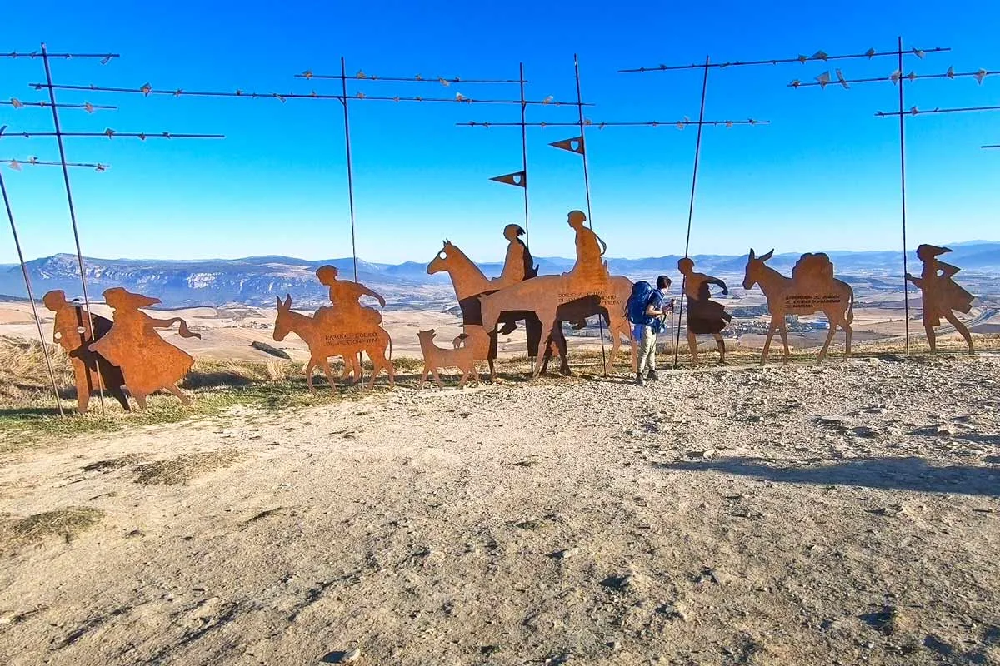
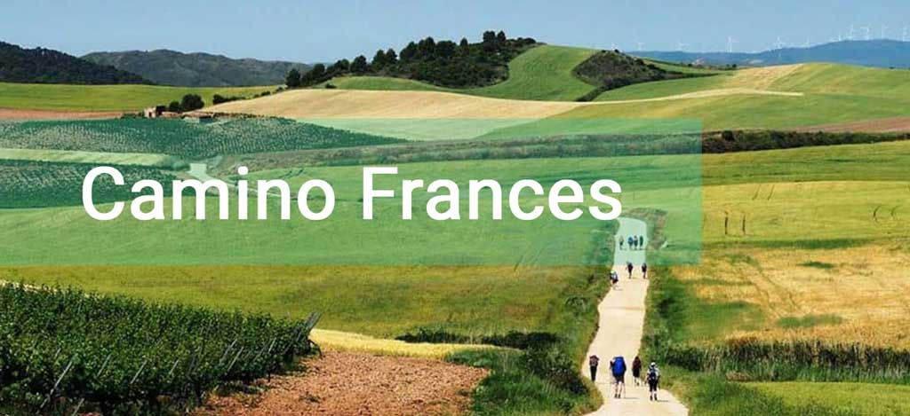
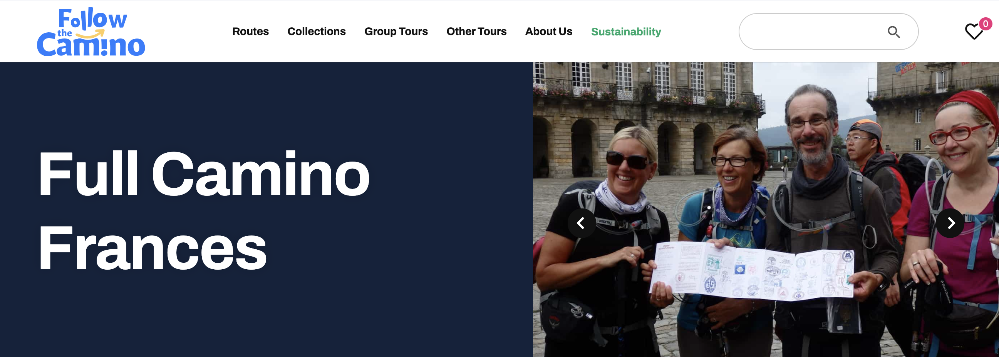

朝圣之路 - 网上资料
Online Resources

Stingy Nomads - Camino de Santiago resources
How to get to St.Jean Pied de Port
The French Camino de Santiago
Camino Frances walking stages 2024, PDF and GPX files
Albergues on the Camino de Santiago
Unforgettable Towns on the Camino de Santiago – The French Way
Our best Camino de Santiago tips
Camino de Santiago light packing list


博客
回应千年古道的召唤 –徒步圣雅各之路3７天900公里
银河下的那条路
活动 | 西班牙朝圣法国之路：看不见的才是永远的！
朝聖之路